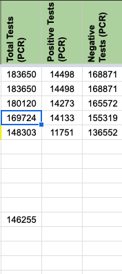
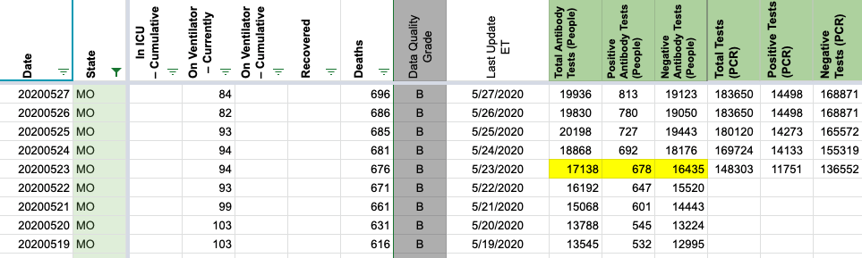
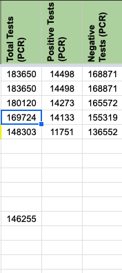
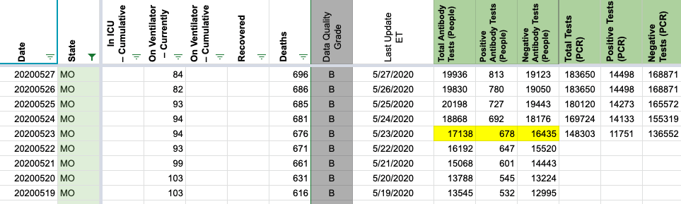

Issue number 445
muamichali opened this issue on May 23, 2020 at 3:38 pm
Labels Historical Data
PCR Query
Serology Query
RAW spreadsheet w data
The information was updated in States Daily from the queries above using this spreadsheet to calculate cumulative from daily numbers.
(Thanks @erfgottlieb @karaschechtman and @camille-le for your work on this)


The information was updated in States Daily from the queries above using this spreadsheet to calculate cumulative from daily numbers.
(Thanks @erfgottlieb @karaschechtman and @camille-le for your work on this)

